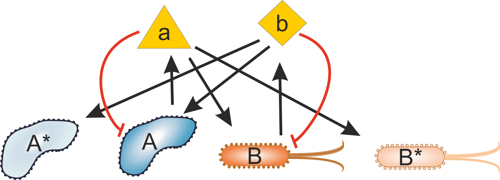

A symposium Organised by the Cooperation and Evolutionary Ecology Research Group. It is a 1-day, small-scale symposium on the evolution of cooperation between agents with different capabilities and characteristics, in Budapest, Hungary during autumn 2026.
The aim of this meeting is to enable scholars from different backgrounds to present their theories, methods, and research findings to create opportunities to foster interdisciplinary collaborations. The workshop will include 10+ researchers from Europe, from various fields of biology, both theoretical and experimental.
The meeting is going to be on the 17th of September (Thursday), starting at 10:00 and ending around 17:00 at 1121 Budapest, Konkoly-Thege Miklós út 29-33. The venue can be easily reached by bus line 221. The bus departs from "Széll Kálmán Tér". To get to the venue, you can get on there or at any of its stops and travel to its final stop, "Csillebérc, KFKI". More information can be found here.
It is important to note that campus entry regulations are strict (there is a working nuclear reactor there). At the reception, please ask for a temporary access card and show your ID card or passport. Please note that the issuance process may take some time. Before the symposium, please fill in and send back the following form.
After the registration at the reception, follow this route to reach our building (approximately 550m, 8 minutes walking uphill). Once you are inside, go to the 3rd floor and turn right. You should see the Institute of Evolution logo (HUN-REN ÖK ETI) there. You can enter the institute using your access card.

